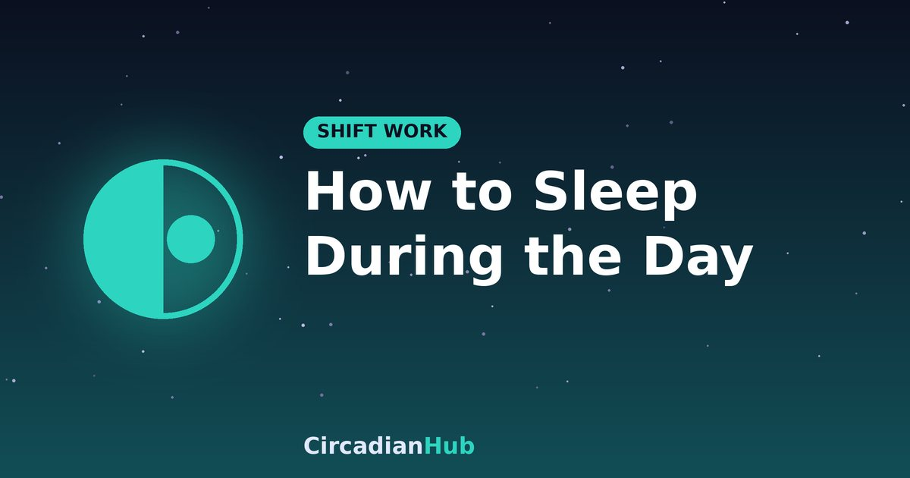

How to Sleep During the Day: The Complete Guide to a Dark, Quiet Bedroom

If you work nights, you are asking your brain to sleep while the sun is up, the neighbours are mowing lawns and every instinct says it is time to be awake. You cannot switch those signals off completely, but you can turn most of them down. This guide covers the four things that matter most for daytime sleep: light, noise, temperature and routine.
Why daytime sleep is harder
Your body clock is set mainly by light. In daylight it pushes alertness up, raises body temperature and holds back the hormone melatonin, all of which work against sleep. On top of that, daytime is noisier and often warmer than night. Studies of night workers commonly find that daytime sleep is shorter than night sleep, often by an hour or more. The good news is that most of the disruption is environmental, which means you can change it.
Step 1: Make the bedroom truly dark
Aim for a room where you cannot see your hand in front of your face. Even small amounts of light can reach your eyes through closed lids and reduce sleep depth.
Blackout curtains and liners
Blackout curtains are the most effective single upgrade. Choose curtains that extend well beyond the window frame, or add a blackout liner behind existing curtains. Light leaks around the edges are the usual weak point, so check the top and sides. In rented homes, tension-rod blackout blinds or removable blackout film can work without permanent changes.
Seal the small leaks
- Cover standby lights on chargers, alarm clocks and televisions with a small piece of tape.
- Use a draught excluder or a rolled towel along the bottom of the door if hallway light comes through.
- Turn clocks and phones face-down or away from the bed.
Add a sleep mask
A well-fitted mask is an inexpensive backup, and it travels with you. Choose one that does not press on your eyelids, and avoid tight elastic that leaves marks.
Step 2: Control the noise
Daytime noise comes in bursts, such as traffic, deliveries, lawn equipment and children, and sudden sounds cause brief awakenings even if you do not remember them.
- Earplugs: foam plugs block the most sound. Try several types and find one you can wear comfortably for hours.
- White or pink noise: a fan or a noise machine masks sudden sounds by making the background steadier. Keep the volume moderate.
- Soft furnishings: heavy curtains, rugs and a bookcase on a shared wall soak up some sound.
- Position your bed: move it away from the street-facing wall if you can.
Step 3: Get the temperature right
Your body temperature naturally falls as you fall asleep, and a cool room helps that process. Many people sleep best at around 18 degrees Celsius (65 F), though the right value varies. Daytime rooms warm up in the sun, so close blinds early, use a fan, and choose breathable bedding such as cotton. If your bedroom is on the sunny side of the house, sleeping in a cooler room, if you have one, can be worth it.
Step 4: Protect your routine
A routine tells your brain that sleep is coming, even when the sun disagrees.
Before you leave work
Wear sunglasses on the way home, even if the morning is cloudy. Bright morning light tells your clock that the day is starting and makes sleep harder.
Wind down for 30 minutes
Once home, do the same things in the same order: light snack if hungry, a shower, brush your teeth, dim the lights and go to bed. Keep screens away, or use them on low brightness. Avoid chores and emails that stir your mind.
Fix your timing
Choose a consistent sleep window and stick to it. For a 7 pm to 7 am shift, that might be 8 am to 4 pm, or 8 am to 2 pm plus a nap. Our night shift sleep schedule gives a full example, and the Shift Work Sleep Calculator works out a window from your own shift times.
A daytime bedroom checklist
| Area | Target | Quick fix |
|---|---|---|
| Light | Near total darkness | Blackout curtains, mask, cover LEDs |
| Noise | Low and steady | Earplugs, white noise |
| Temperature | Cool, about 18 C | Close blinds, fan, light bedding |
| Phone | Silent | Do not disturb; allow key contacts |
| People | Aware of your hours | Sign on the door, agreed quiet times |
Food, drink and caffeine before sleep
Stop caffeine at least six hours before your planned sleep. For an 8 am bedtime, that means your last coffee should be about 2 am. A light snack can stop hunger waking you, but avoid heavy or spicy meals and go easy on fluids in the last hour so you do not need the bathroom. Alcohol may make you drowsy at first, but it fragments sleep and is a poor sleep aid.
What to do when you cannot fall asleep
Lying awake and getting frustrated makes things worse. If you have been awake for about 20 minutes, get up, keep the lights low and read or do something calm, and go back when you feel sleepy. Avoid the phone and bright screens. If you regularly cannot sleep during your planned window, check whether your environment is really dark and quiet, and think about the timing of caffeine, light and exercise. Our guide to falling asleep faster has more techniques.
Handling naps and split sleep
Some night workers sleep in two parts, a longer block in the morning and a shorter nap before the shift. A nap of 90 minutes completes a full cycle, and a 20-minute nap gives a quick lift without heavy grogginess. Keep the nap away from the time you need to sleep properly, and give yourself at least 45 minutes to wake up before you leave for work. See the best nap length.
Sleeping during the day on days off
You will be tempted to flip fully to a daytime schedule on days off. That is fine if you only work a few nights, but it makes each return to nights feel like jet lag. A common compromise is to sleep later on days off, for example 3 am to 11 am, and shift gradually.
Mistakes that ruin daytime sleep
- Relying on a sleep mask alone with a bright room and no curtains.
- Checking the phone in bed.
- Sleeping at a different time each day.
- Drinking coffee "to stay awake" close to your sleep time.
- Trying to sleep when you are not tired, instead of using a proper wind-down.
Sleeping during the day in a shared home
The hardest daytime noise often comes from other people. Have a short, friendly conversation about your hours and agree on quiet periods, for example no vacuuming or loud television between 8 am and 2 pm. Give family members a simple way to check when you are sleeping, such as a sign on the bedroom door, and switch your phone to do-not-disturb with an exception for emergency contacts. If you have children, share the morning routine with a partner or relative where you can, so you can sleep straight after you get home.
Sleeping away from home
Hotel rooms are often bright and noisy during the day. Ask for a quiet room away from lifts and ice machines, use the "do not disturb" sign, and bring your own mask, earplugs and a small clip to hold the curtains closed. A portable white noise app on low volume can also help mask corridor noise.
Signs your environment still needs work
- You wake before your alarm and cannot fall back asleep.
- You sleep less than about six hours in your planned window.
- You feel unrefreshed even after a full window.
- You are more alert in the evening than after waking.
If several of these apply, review each element of the checklist above and change one thing at a time, so you can see what makes the difference.
Frequently asked questions
Is daytime sleep as good as night sleep?
It tends to be shorter and lighter, but with a dark, cool, quiet bedroom and a regular routine, you can get good quality sleep.
Do I need a sleep mask if I have blackout curtains?
Not necessarily, but a mask is a cheap backup for light leaks.
Can I use melatonin?
Some night workers do, but timing and dose matter, so ask a doctor or pharmacist first.
How long does it take to get used to it?
Most people improve within a couple of weeks of consistent routines, though full adaptation to nights is rare.
Summary
- Make the room dark, cool and quiet, in that order of priority.
- Wear sunglasses on the commute home.
- Keep a fixed sleep window and a wind-down routine.
- Stop caffeine about six hours before you sleep.
- If you cannot sleep after about 20 minutes, get up and try again later.
Plan sleep around your shift with our Shift Work Sleep Calculator.
Sources and further reading
- NIGMS (NIH): Circadian Rhythms fact sheet
- CDC/NIOSH: How Shift Work and Long Work Hours Increase Health and Safety Risks
Last updated: 1 October 2026. Links are general background reading from public-health organisations. How we write and update our guides.
Medical disclaimer: This article is for general information only and is not medical advice. If you have persistent sleep problems or excessive daytime sleepiness, speak with a doctor or sleep specialist.